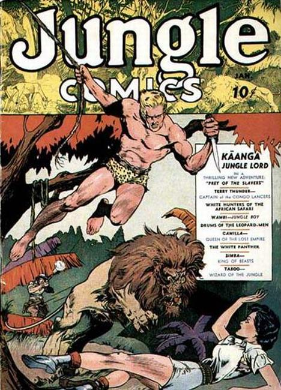
163 issues from 1940 - 1954 by Fiction House
×
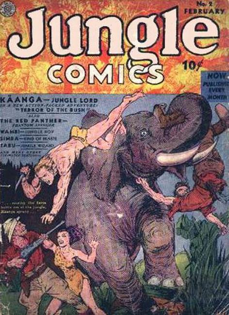
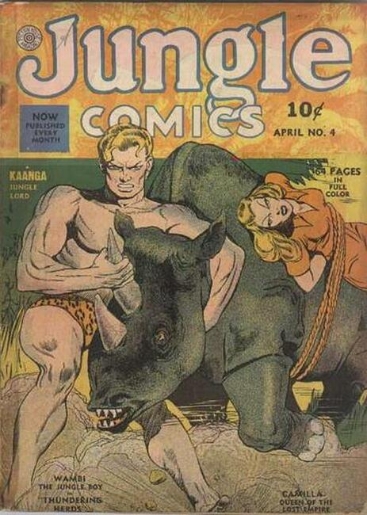
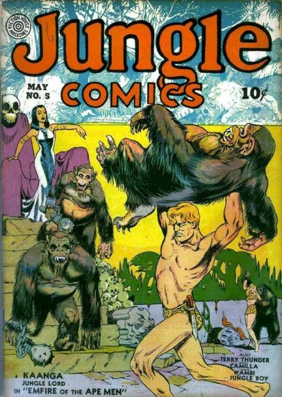
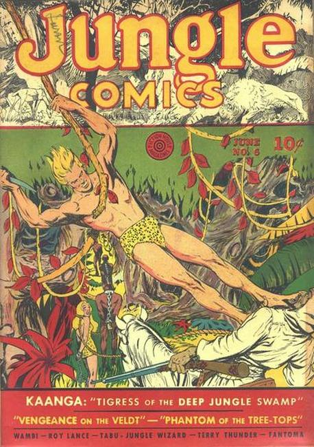
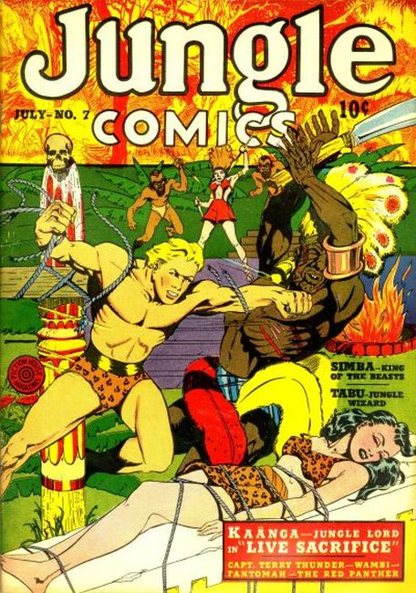
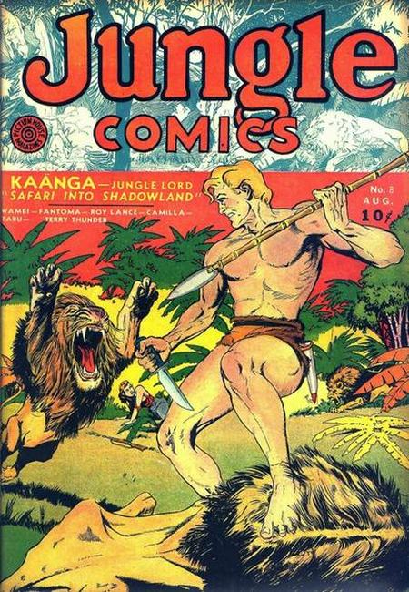
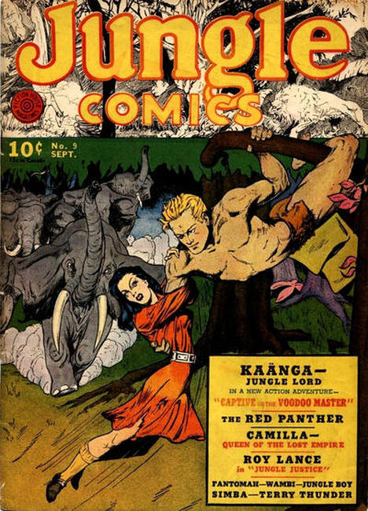
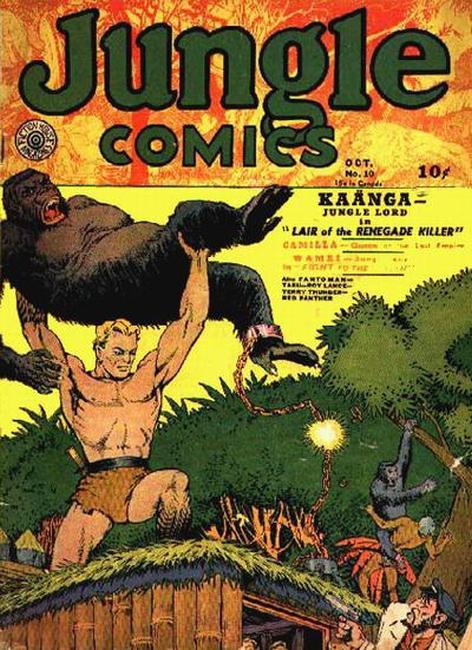
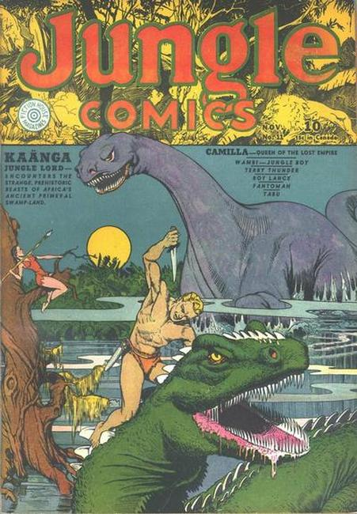
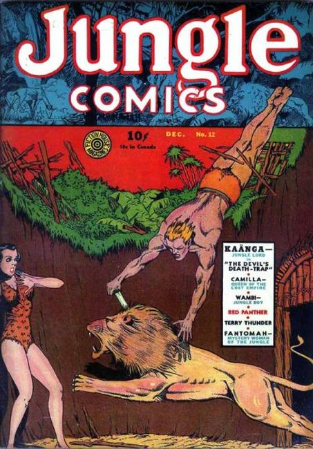
❮
❯
Action anathology series.
Issue #1 Cover art by Lou Fine. 68 pages, color, cover price $0.10.
"Prey of the Slavers," art by Alex Blum (as Alex Boon); Kaänga rescues Ann from the slaver, Blacton, and tells her how he came to live in the jungle.
Untitled story, art by Taylor Martin; The White Panther is dispatched by his father to help Dr. White recover curative gems and to protect the Whites from Zaroff, an unethical competitor.
"The Slave Raiders," script and art by Fletcher Hanks (as Henry Fletcher); In return for rescuing a witch doctor, Tabu is given a "six sense" and amazing powers which he uses to combat evil and injustice in the jungle.
"Queen of the Lost Empire," art by C. A. Winter; Explorer Jon Dale discovers a lost city in the jungle, ruled by Queen Camilla; Daily human sacrifices are necessary for Camilla and her people to retain their immortality.
Untitled story; Terry and his lancers are assigned to a fort, deep in the jungle, and are charged with interrupting the slave trade.
Untitled story; Gunrunners sell guns to the natives in Wambi's jungle, which they then use to steal gold from local prospectors; Wambi reports the crimes to the local constabulary who defeat the natives.
Untitled story; Cog bails out petty criminals Buck, Rex, and Slim to use as overseers of his safari; Cog drives the natives too hard and they rebel.
Untitled story; Aging Simba saves the life of his rival, Slita and then barely manages to prevent being usurped by the younger Slita; Simba concedes his pride Slita and departs.
Untitled story; Safari guide Buck Barton infiltrates a leopard cult to rescue his client.